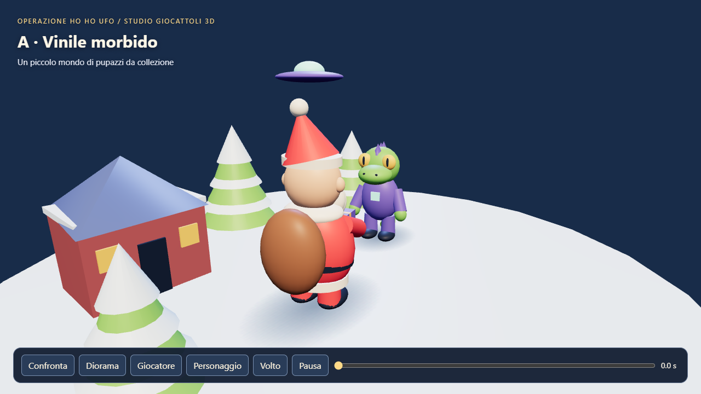
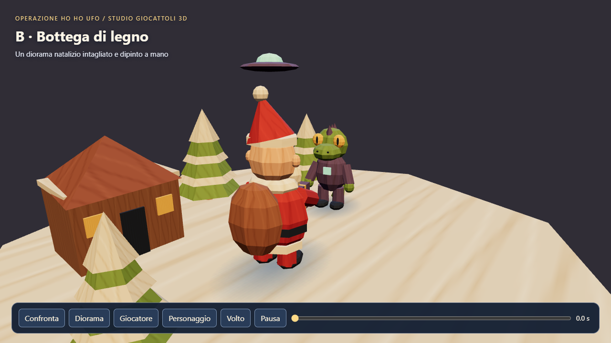
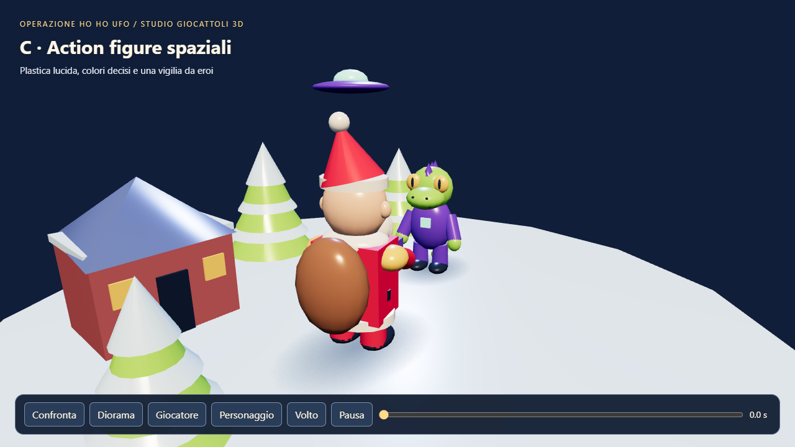

A / Consigliata
Vinile morbido
Forme panciute, colori allegri e superfici morbide. La variante più accogliente e adatta alle gag natalizie.
Esplora in 3D →Massimo rilevato: 94 draw call · 23.016 triangoli
Tutte le inquadratureHai scelto i giocattoli 3D. Ecco tre interpretazioni della stessa scena, con gli stessi personaggi, la stessa animazione e le stesse inquadrature. Queste sono prove di stile, non ancora il gioco.

Forme panciute, colori allegri e superfici morbide. La variante più accogliente e adatta alle gag natalizie.
Esplora in 3D →Massimo rilevato: 94 draw call · 23.016 triangoli
Tutte le inquadrature
Superfici sfaccettate e venature procedurali. Sembra un villaggio di giocattoli dipinti, caldo e fatto a mano.
Esplora in 3D →Massimo rilevato: 94 draw call · 4.544 triangoli
Tutte le inquadrature
Plastica lucida, spalline dorate e cappotto squadrato. Un Babbo Natale più supereroe, pronto alla battaglia.
Esplora in 3D →Massimo rilevato: 96 draw call · 11.156 triangoli
Tutte le inquadratureOgni anteprima offre quattro viste e una timeline di 6 secondi. Babbo Natale porge un regalo al rettiliano. Contatti mani–regalo e piedi–suolo verificati entro 1 mm; 48 fotogrammi controllati, nessun errore del browser.